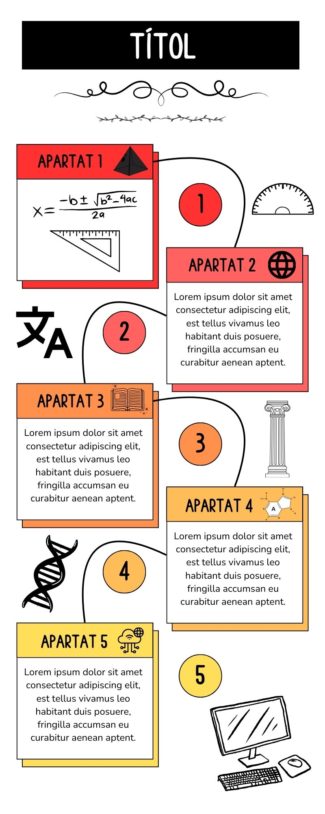
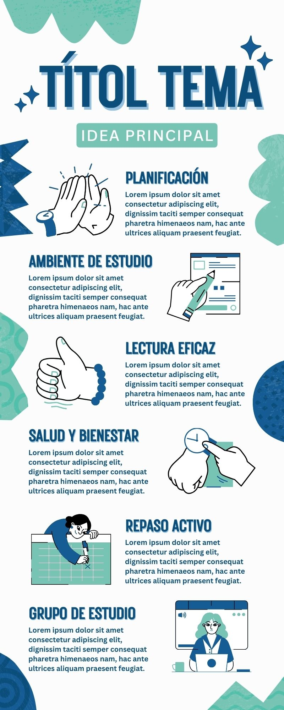
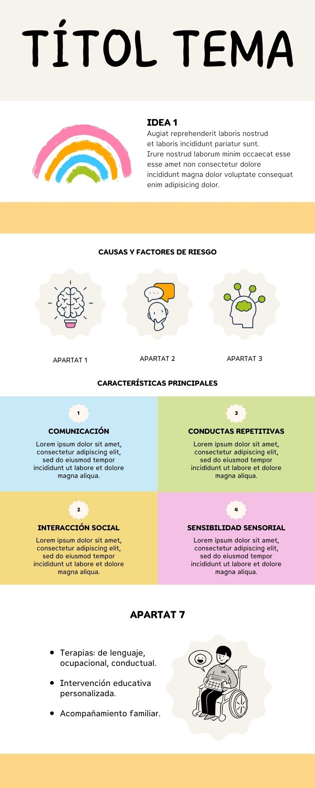

Estudia Batxillerat
Inici
Tècniques i Recursos d'estudi
Resums
Fitxes Estudi
Exàmens Selectivitat
16
Tècniques Memorístiques
Vídeos Educatius
16
Sintetitzadors Informació
Esquemes
4
Mapes Conceptuals
4
Mapes Mentals
4
Infografies
3
Tècniques de relaxació
Respiració
Muscular progressiva de Jacobson
Meditació
Ioga
6
Activitats Relaxants
16
Relaxació de Benson
Hàbits d'estudi
Objectiu clar
4
Atenció a classe
Establir un horari
4
Descans
Preguntar Dubtes
4
Dieta Equilibrada i Activitat Física
Preguntes Freqüents
Contacte
Infografies
Consells per fer una bona infografia
Utilitza paraules clau per sintetitzar el contingut.
Afegeix elements visuals per facilitar-ne la comprensió.
Estructura el contingut amb títols, subtítols, paràgrafs resumits, entre d'altres.
Intenta utlitzar una paleta de colors diferents.
Respectar els màrgens per separar els diferents elements.
Afegeix les fonts de les imatges i contrasta la informació.
Comprovar i corregir els errors.
Errors que cal evitar
Recarregar la infografia amb massa informació i massa elements visuals.
Fer servir imatges irrellevants i poc visibles.
Saturar la infografia sense deixar espais buits.
Barreja molts estils sense cap mena de coherència.
Alguns exemples:
  